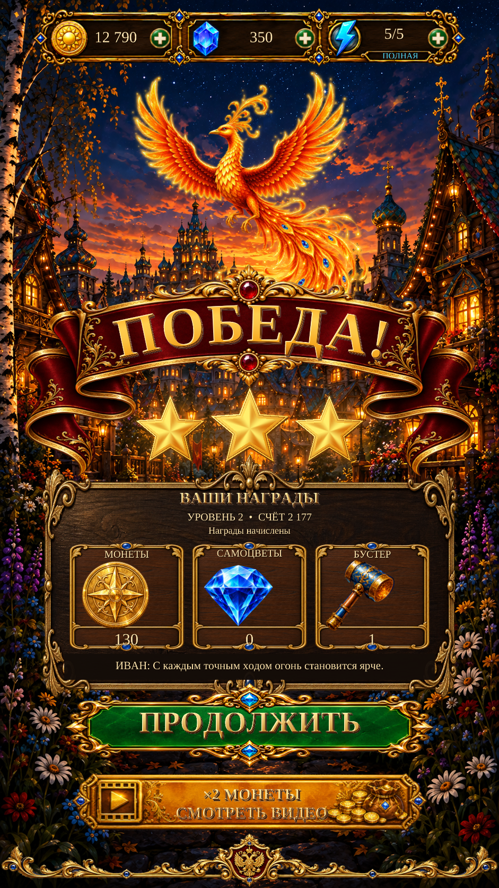

Victory — «Победа» · R6
Clearer reward labels, a plain inset for live story/status text and taller Continue/video actions. Existing artwork, celebration and actual reward behavior are retained.

This viewer displays one full portrait at a time. Existing independent artwork is assembled with live text and interactive controls in Unity. Exact reference fidelity is not claimed; visual acceptance remains pending. These captures are Editor evidence, not physical Android testing.